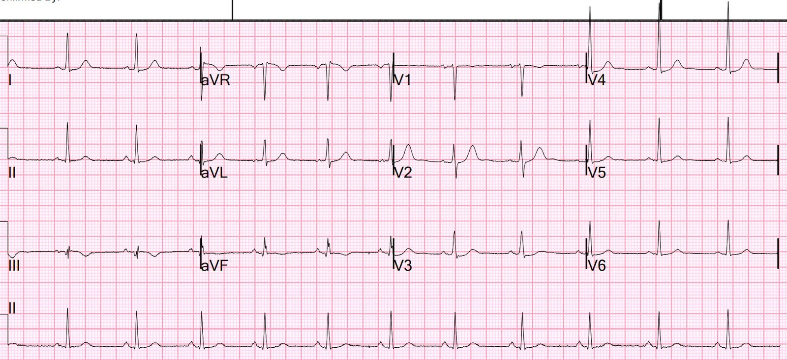
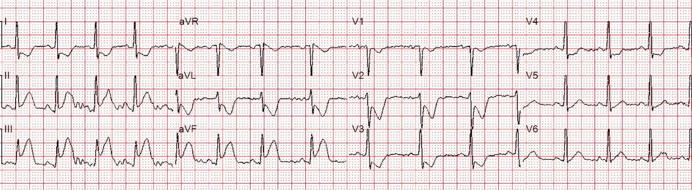
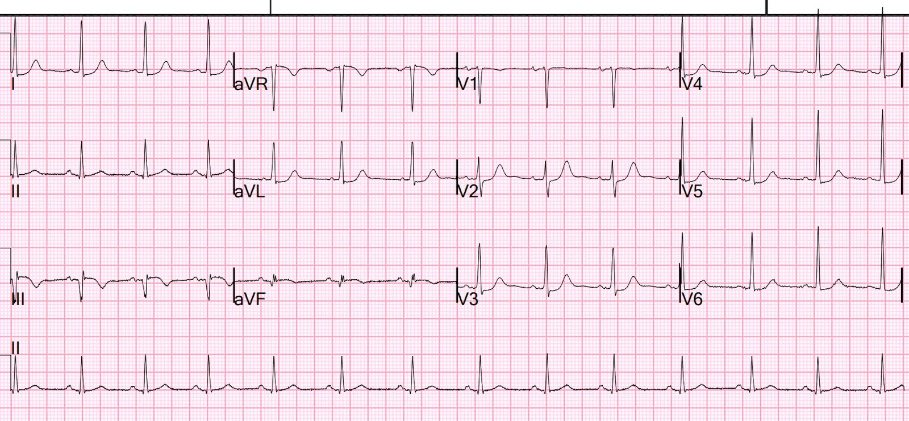

05/06/2023 — Bệnh nhân nam ngoài 40 tuổi đau ngực đang giảm dần, với “điện tâm đồ bình thường” theo máy tính và theo bác sĩ tim mạch đọc lại
Bản dịch tiếng Việt của bài "A 40-something male with resolving chest pain and a “Normal ECG” by computer and cardiology overread" – Dr. Smith’s ECG Blog. Giữ nguyên toàn bộ 4 hình ảnh của bản gốc.
Một bệnh nhân nam ngoài 40 tuổi được xe cấp cứu đưa đến vì đau ngực kéo dài một giờ, đang giảm dần sau khi ngậm nitroglycerin dưới lưỡi và nhai 325 mg aspirin.
Đây là điện tâm đồ đầu tiên của anh ấy tại khoa cấp cứu (ED):


Bạn nghĩ gì?
Thuật toán Veritas.
Tôi đọc điện tâm đồ này, không có bất kỳ bệnh sử nào, là OMI thành dưới và thành sau đang tái tưới máu, do có sóng Q ở chuyển đạo III kèm ST chênh lên (STE) tối thiểu và ST chênh xuống soi gương ở V2-V4 (điều không bao giờ nên có ở đó). Sóng T dương lớn ở V2 phù hợp với tái tưới máu.
Bất kỳ ST chênh xuống nào tối đa ở V1-V4 đều là OMI cho đến khi chứng minh được điều ngược lại
Tôi gửi điện tâm đồ này cho Pendell mà không kèm thông tin gì. Mỗi ngày chúng tôi gửi cho nhau hàng chục điện tâm đồ. Phần lớn là những ca trông giống OMI (giả OMI). Vì vậy, khi anh ấy thấy OMI trên điện tâm đồ, hay OMI đang tái tưới máu, thì không phải vì xác suất tiền nghiệm cao. Mà là vì anh ấy RẤT giỏi.
Anh ấy trả lời: “OMI dưới-sau đang tái tưới máu”
Tôi gửi nó cho Bot AI #PMCardio (còn gọi là Queen of Hearts) và cô ấy trả lời “OMI, độ tin cậy trung bình”)
Nhưng thuật toán thông thường đọc bản ghi này là “Điện tâm đồ bình thường”
Và bác sĩ tim mạch đọc lại (overread) (cũng không có bối cảnh lâm sàng) cũng đọc bản ghi này là “Điện tâm đồ bình thường”
Bây giờ tôi cần kể cho bạn toàn bộ câu chuyện:
Thực ra bệnh nhân này đã được ghi một điện tâm đồ trước viện khi đang đau dữ dội. Đây là bản ghi đó:


OMI STEMI dương tính (STEMI (+) OMI) thành dưới-sau rõ ràng.
Phòng thông tim (cath lab) đã được kích hoạt từ trước viện
Thuật toán Zoll
Nhưng hãy hình dung nếu bệnh nhân tự đi bộ vào viện. Hoặc không được ghi điện tâm đồ trước viện trên xe cấp cứu. Khi đó bác sĩ cấp cứu sẽ phải dựa vào điện tâm đồ đầu tiên đó.
Troponin ban đầu là: 3 ng/L
Đây là kết quả chụp mạch vành:
–Thủ phạm là tổn thương hẹp 100% ở RCA đoạn gần. (Hẳn là nó đã tắc lại trong khoảng thời gian từ khoa cấp cứu đến phòng thông tim)
–Tổn thương đã được đặt stent.
Điều này chỉ ra một thực tế quan trọng: điện tâm đồ và phim chụp mạch vành luôn được ghi ở những thời điểm khác nhau, và huyết khối là thứ động — lan rộng ra và tự ly giải.
Ngoài lề về nghiên cứu điện tâm đồ: 20% các ca STEMI chẩn đoán chắc chắn (Cox và cs.) có dòng chảy mạch vành hoàn hảo vào thời điểm chụp mạch. Do đó, trong nghiên cứu điện tâm đồ của mình, chúng tôi cần tìm một tiêu chí kết cục thay thế phản ánh tình trạng của động mạch tại thời điểm ghi điện tâm đồ. Dựa trên nhiều nghiên cứu về troponin đỉnh (một thước đo tốt cho kích thước ổ nhồi máu) ở cả STEMI lẫn NSTEMI, chúng tôi đã chọn những ngưỡng cắt nhất định cho từng loại: troponin I và T thế hệ hiện hành (contemporary), cũng như troponin I và T độ nhạy cao.
Điện tâm đồ sau PCI


OMI thành dưới và thành sau đã tái tưới máu
Thuật toán Veritas
Siêu âm tim cản âm bằng bọt khí chính thức
–Kích thước, bề dày thành và chức năng tâm thu thất trái bình thường, phân suất tống máu (EF) ước tính 59%.
–Rối loạn vận động thành khu trú – giảm động thành dưới và dưới-bên, từ đoạn đáy đến đoạn giữa. (Các phân đoạn trên siêu âm tim thuộc vùng mà chúng tôi gọi là thành sau được xếp loại là “thành bên”)
Troponin I độ nhạy cao (hs) đỉnh = 13.900 ng/L

===================================
BÌNH LUẬN CỦA TÔI, bởi KEN GRAUER, MD (5/6/2023):
===================================
Những điểm giảng dạy của ca hôm nay mang lại những bài học đáng được nhấn mạnh.
- Còn đáng lo ngại hơn cả việc bác sĩ tim mạch đọc lại đã chấp nhận kết quả đọc bằng máy tính cho điện tâm đồ ban đầu này là “bình thường” — chính là việc “bác sĩ tim mạch đọc lại” này rõ ràng đã không nhận ra SỰ CẦN THIẾT phải DỪNG việc mình đang làm để hỏi về bệnh sử (vì với vai trò “bác sĩ tim mạch đọc lại” — họ được giao trách nhiệm đọc lại điện tâm đồ này và đối chiếu nó với lâm sàng). Đó là vì NẾU bệnh sử là đau ngực mới xảy ra — thì điện tâm đồ ban đầu tại khoa cấp cứu này phải được đọc như BS. Smith và BS. Meyers đã đọc = “OMI dưới-sau đang tái tưới máu cho đến khi chứng minh được điều ngược lại!”
- Mối lo của tôi là còn quá nhiều bác sĩ tim mạch vẫn chưa nắm được sinh lý cơ bản của tắc mạch vành cấp (tức là đó là một quá trình đang diễn tiến — có thể gồm một hoặc nhiều giai đoạn tự tái thông rồi tắc lại, cho đến khi động mạch thủ phạm đi tới kết cục sau cùng).
- Theo BS. Smith — nếu bác sĩ tim mạch đọc lại này lại là bác sĩ tim mạch trực — và nếu điện tâm đồ trước viện trong lúc đau ngực (cho thấy STEMI rõ ràng) không được ghi — thì ca OMI này hẳn đã bị bỏ sót, với hậu quả nhiều khả năng là thảm khốc.
- Không thể đọc điện tâm đồ trong chân không. Cần có bệnh sử lâm sàng. Thường cũng cần các điện tâm đồ liên tiếp (ghi lại điện tâm đồ chỉ sau 10-20 phút nếu quá trình có vẻ đang diễn ra). Đó là vì (theo BS. Smith) — troponin lần 1 sẽ bình thường ở ≥27% các ca OMI cấp!
- Các bản ghi liên tiếp thường cho thấy thay đổi ST-T “động” (dynamic) — mà ở một bệnh nhân đau ngực, cho phép chẩn đoán xác định nhanh chóng, điều có thể không rõ ràng nếu chỉ có một bản ghi duy nhất.
- “Thay đổi ST-T động” trở nên có ý nghĩa hơn nhiều — NẾU được đối chiếu với sự hiện diện và mức độ nặng của đau ngực (tức là, thay đổi ST-T giảm đi cùng lúc với đau ngực giảm hoặc hết là chẩn đoán tình trạng tự tái thông — và là chỉ định rõ ràng để kích hoạt phòng thông tim ngay, với hy vọng ngăn ngừa tình trạng tự tắc lại).
- Các chương trình máy tính hiện nay không tính đến bệnh sử lâm sàng, cũng như các thay đổi trên các điện tâm đồ liên tiếp. Do đó — một điện tâm đồ như bản ghi ban đầu tại khoa cấp cứu trong ca hôm nay gần như luôn bị bỏ sót! Chương trình AI Queen of Hearts (QOH) đã nhạy và đặc hiệu hơn nhiều so với các chương trình máy tính trước đây trong việc nhận diện OMI cấp — và — QOH sẽ có thể tích hợp việc đối chiếu lâm sàng với các thay đổi trên điện tâm đồ liên tiếp trong một tương lai không-quá-xa.
Cuối cùng — Có nhiều dấu hiệu điện tâm đồ bất thường trên điện tâm đồ ban đầu tại khoa cấp cứu, đến mức không bác sĩ tim mạch đọc lại nào nên chấp nhận kết quả đọc “bình thường” của máy tính cho bản ghi này. Những dấu hiệu bất thường này gồm:
- Không chỉ có ST dạng vòm (coving) chênh lên nhẹ và sóng T đảo ngược lớn không tương xứng ở chuyển đạo III (so với biên độ QRS rất nhỏ ở chuyển đạo này) — mà còn có sóng Q khởi đầu rộng, kèm phân mảnh tạo nên phức bộ QrsR’. Kiểu phân mảnh này ở một chuyển đạo dưới làm tăng đáng kể độ đặc hiệu cho chẩn đoán nhồi máu thành dưới chắc chắn, so với khi chỉ đơn thuần có các sóng Q nhỏ ở chuyển đạo dưới.
- Sóng T đầy-đặn-hơn-mức-đáng-có ở chuyển đạo aVL là hình ảnh soi gương ngược chiều của ST-T ở chuyển đạo III ==> thay đổi soi gương gợi ý mạnh một biến cố gần đây (nếu không phải vẫn đang diễn ra cấp tính).
- Sóng T ở chuyển đạo aVF cũng đảo ngược (dù nông) — điều này, cùng với những gì ta thấy ở chuyển đạo III và aVF [người dịch: nhiều khả năng ý tác giả là III và aVL], gợi ý những thay đổi gần đây (tùy thuộc vào bệnh sử đau ngực) của OMI thành dưới, nay nhiều khả năng đã tái tưới máu.
- Theo BS. Smith — sóng T cao không tương xứng và đầy-đặn-ở-đỉnh-hơn-mức-đáng-có ở chuyển đạo V2, trong bối cảnh OMI thành dưới mới xảy ra, cho thấy tái tưới máu thành sau. Lưu ý rằng thay vì ST chênh lên nhẹ như dự kiến ở chuyển đạo V2 — lại có ST chênh xuống (nghiệm pháp soi gương (“Mirror Test”) dương tính) nhẹ-nhưng-thật, điều này chẩn đoán OMI thành sau — và được củng cố thêm bởi ST chênh xuống kín-đáo-nhưng-thật ở các chuyển đạo V3,V4 kế cận.
- Đoạn ST ở các chuyển đạo V5,V6 dẹt và hơi chênh xuống — điều này không bao giờ là “bình thường” ở một bệnh nhân có đau ngực mới.
- Dấu hiệu đoạn ST không chênh xuống ở chuyển đạo V1 — đi kèm với OMI dưới-sau cấp — gợi ý rằng đây nhiều khả năng là tắc RCA đoạn gần, với khả năng cao có tổn thương thất phải (RV) cấp.
Hy vọng những bài học này sẽ được nhiều người trong cộng đồng tim mạch — những người vẫn còn “mắc kẹt” trong mô hình STEMI — tiếp thu.